Итак, мы установили, что первый печатный рассказ о путешествии Дрейка The famous voyage был опубликован Ричардом Хаклюйтом в 1589 году в книге The principall navigations. Нам понятно также, что установить подлинного автора этого рассказа не удалось. Впервые «авторские» работы появились лишь в 1628 году, когда племянник и полный тезка Дрейка, баронет Фрэнсис Дрейк собрал вместе записки участников кругосветного путешествия в одном томе, озаглавленном «Мир, опоясанный сэром Фрэнсисом Дрейком» (The World Encompassed by Sir Francis Drake). Основу публикации составил дневник капеллана экспедиции преподобного Френсиса Флетчера (читая дневник капеллана, полезно не забывать, что преподобному в начале экспедиции только-только исполнилось 22 года, а ко времени публикации его уже давно не было в живых – он умер в 1619 году). Подлинник дневника, как и полагается, до нас не дошел. Сохранилась лишь копия первой его части, сдаланная в 1677 году лондонским аптекарем Джоном Коньерсом (John Conyers 1633–1694, "Citizen and Apothecary of London", пионер английской археологии). Копия заканчивается описанием острова Моча (Isla Mocha), который Дрейк посетил в ноябре 1578 года.
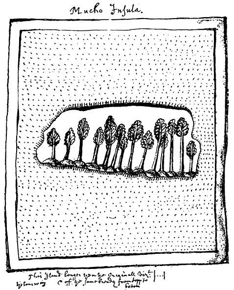
Рисунок с изображением острова Моча из копии манускрипта Фрэнсиса Флетчера.
[Сердце каждого любителя морских приключений не останется равнодушным к названию этого острова.
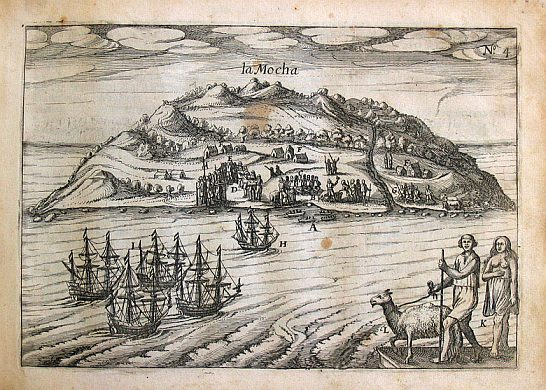
Остров Моча. Гравюра (1616) из книги Speculum orientalis occidentalis que indiae navigationum… голландского капера Йориса ван Спилбергена (1568—1620).
Именно у острова Моча впервые был замечен гигантский кашалот-альбинос, получивший имя Mocha Dick, который потопил несколько китобойных судов, в том числе в 1820 году им был потоплен известный китобоец Эссекс.
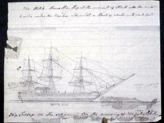
Лишь 7 человек из экипажа смогли выжить и лишь благодаря каннибализму. Эта драма была положена в основу романа Германа Мелвилла «Моби Дик». Приведенный здесь рисунок с изображением Эссекса взят из рукописи воспоминаний выжившего юнги китобойца Томаса Никерсона (Thomas Nickerson). Рядом показан Моча Дик]
После этого отступления вернемся к дневнику преподобного Фрэнсиса Флетчера и его возможной связи с журналом Дрейка.
Дневник Флетчера содержал не только записи событий, но и рисунки, которые, как полагают, он скопировал из журнала Дрейка. (Проверить это мы не можем, так как вероятнее всего журнал Дрейка сгорел во время пожара дворца Уайтхолл в январе 1698 года). Все участники экспедиции, оставившие свои воспоминания, пишут, что Дрейк много времени проводил за рисованием, в чем ему помогал его юный двоюродный брат Джон Дрейк, талантливый художник. В первом издании дневника Флетчера эти рисунки помещены не были, однако они сохранились в копии рукописи, которая находится в Библиотеке Британского музея. Большая часть рисунков сделана пером, часть из них раскрашена. Наиболее знаменитая из этих иллюстраций – карта южной оконечности Южной Америки с обозначением острова Елизаветы – публикуется часто.
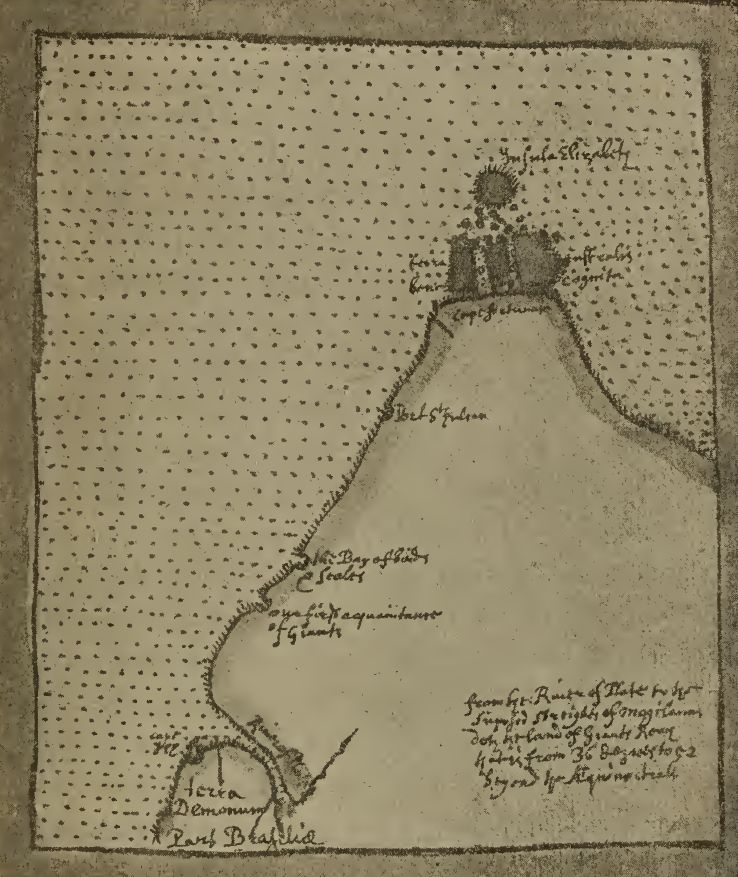
Другие иллюстрации из копии рукописи Флетчера менее изввестны. Все они вместе составляют официально признанный комплект рисунков экспедиции Дрейка, других не сохранилось. Вот образцы некоторых из эскизов Флетчера:
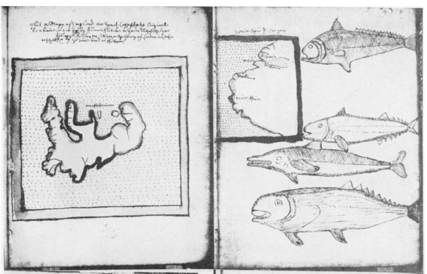
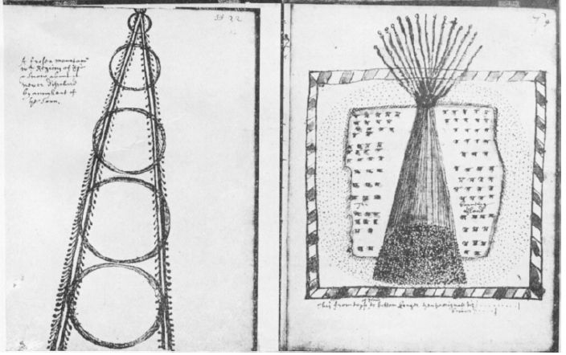
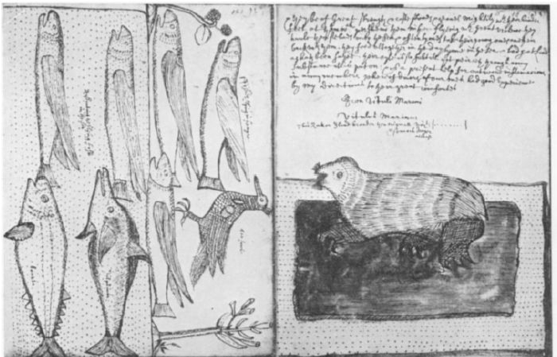
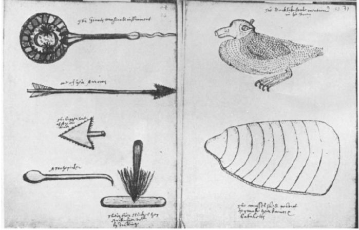
Если первый из этих рисунков является копией с карты Англии неизвестного автора и приведен в качестве масштаба для других карт, то следующие – авторская работа Флетчера. Стиль их кажется совсем простым и реалистичным по сравнению с иллюстрациями других авторов книг того времени с описанием окружающего мира
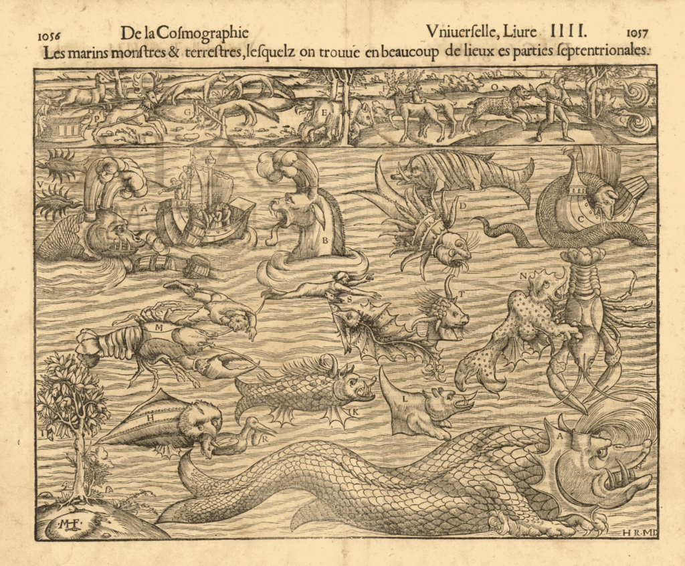
Иллюстрация Dangers of the Northern Seas из книги Себастиана Мюнстера (Sebastian Münster, Les marins monstres & terrestres, Cosmographia. Basle, 1550.)
Еще один преподобный, но уже француз, морской историк Альбер Антьём пишет, что Дрейка в кругосветном плавании сопровождал французский художник, имя которого история до нас не донесла. Он делал зарисовки берегов вдоль маршрута следования экспедиции. Некоторые исследователи полагают, что это тот самый художник, который сопровождал Дрейка во время его последней экспедиции в Вест-Индию в 1595—1596 годах. Вот образцы работы этого художника, которые найдены Ронсьером в архивах Французской национальной библиотеки
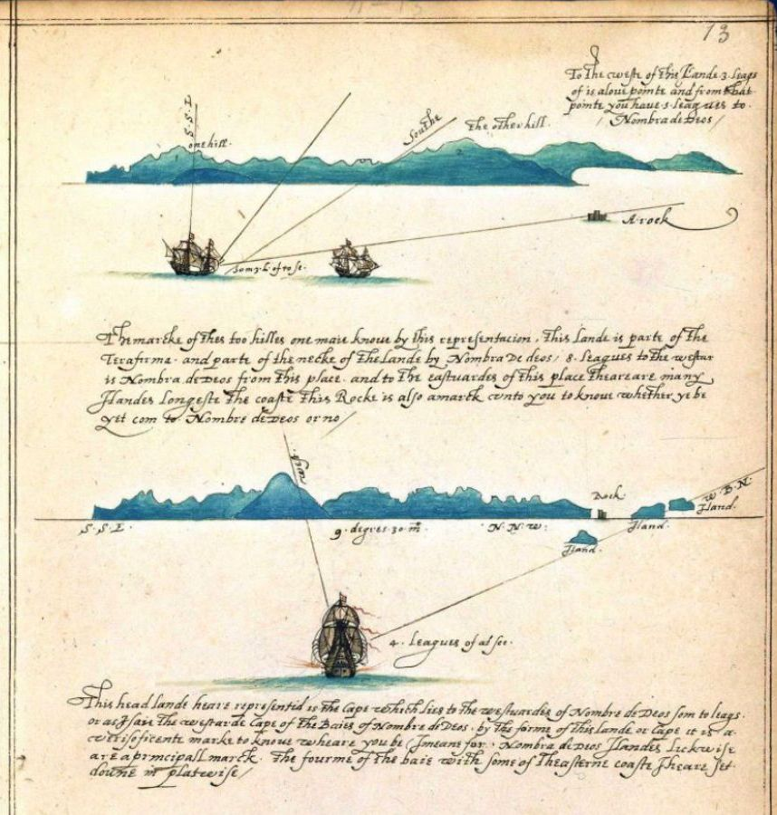
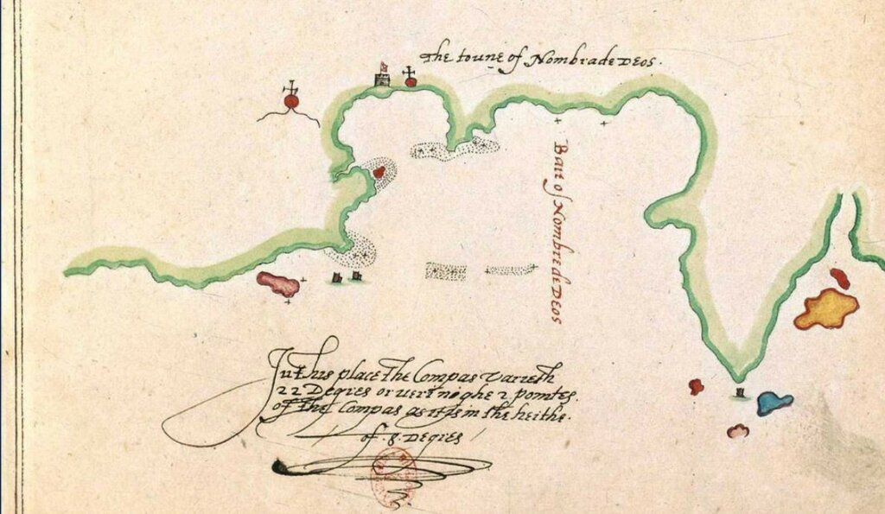
Именно этот художник запечатлел место последней стоянки Дрейка у острова Бона Вентура при входе в порт Пуэрто-Бельо (современный Портобело в Панаме).
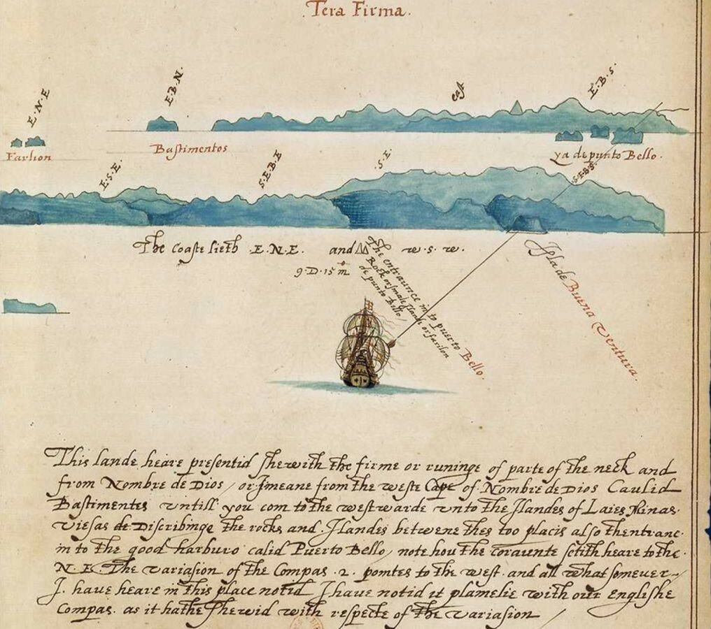
Внизу на этой странице художник сделал надпись, которая стала своего рода эпитафией для адмирала Дрейка, похороненного в море в свинцовом гробу
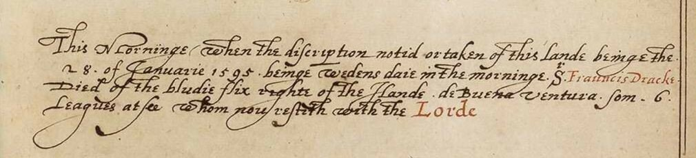
This morning, when the description noted or taken of this land, being the 28 of January, 1595, being Wednesday, in the morning, Sr Francis Drake died of the bloody flux, right off the island de Buena Ventura, some 6 leagues at sea, whom now resteth with the Lord.
Этим утром, когда делалось описание этого берега, 28 января 1595 [1596] в среду утром, сэр Фрэнсис Дрейк умер от дизентерии, приблизительно в шести лигах мористее острова Буэна Вентура, упокой его господь.
Мы не знаем, имеет ли под собой основание гипотеза о том, что именно этот художник сопровождал Дрейка во время кругосветного плавания 1578-1580 гг. Как и всё в этой истории – лишь предположения и догадки.
Продолжим в следующий раз.